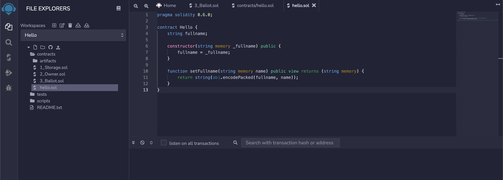
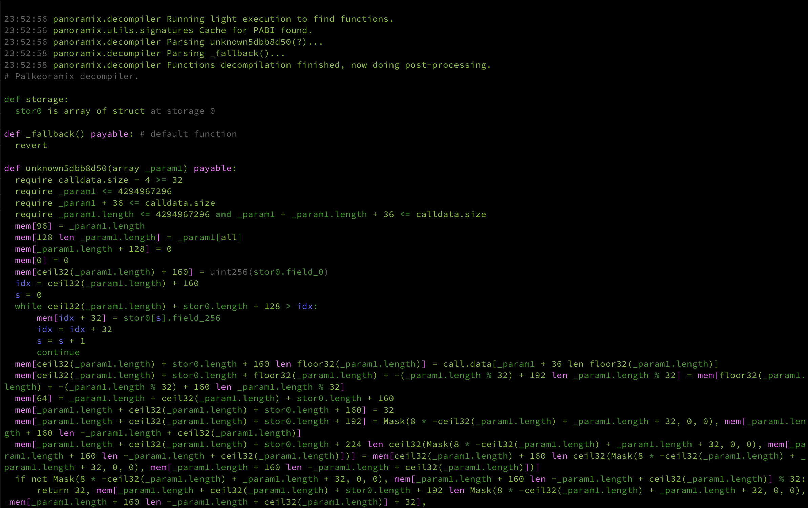
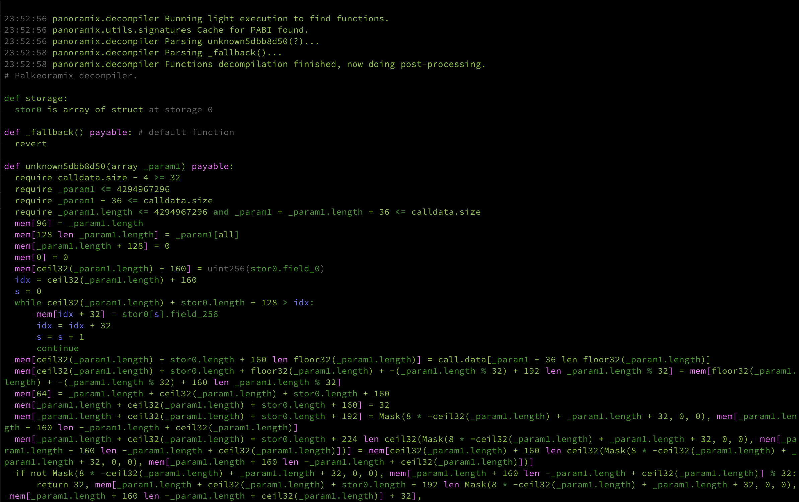

Kali ini saya mau share, bagaimana membuat smart contract pada blockchain Ethereum,
kemudian reverse EVM bytecode & simulasi mengunakan Qiling.
Saya buatkan menjadi beberapa part:
1. Deploy Smart Contract
2. Reversing Smart Contract
3. Simulate Smart Contract
Deploy Smart Contract
Sebelum memulai, mari kita coba untuk build smart contract nya mengunakan solidity.
bisa buka browser di halaman https://remix.ethereum.org/
kalian juga bisa, mengubah nama workspace nya , disini saya membuat smartcontract dengan nama Hello.
Kemudian di bagian folder contracts, bikin file baru misal: hello.sol
masukan code ini :

Untuk mengecheck code nya berjalan dengan baik & benar, bisa mengunakan compile.
Jangan lupa sesuaikan compailer solidity nya dengan versi 0.6.0 jg.
Jika ouput nya seperti ini, dan tidak ada error maka code yang ditulis sudah betul.
Setiap kali kita membuild smart contract kita membutuhkan ETH sebagai gas feenya.
berhubung kita bikin untuk pembelajaran bisa mengunakan versi testnet, dengan begitu kita tidak perlu mengeluarkan ETH betulan.
Buat dulu Wallet ethereum nya bisa mengunakan Metamask, kemudian set networknya menjadi Ropsten Test Network.
Kemudian, set ENVIRONMENT menjadi Injected Web3 kemudian click DEPLOY
Setelah di deploy kontraknya, bisa check transaksinya disini 0xcb49a080e18347c61b47e63c626040a69e2bbfa6e8cebc5505afbb405f775a1d
Pada bagian Input Data terdapat EVM bytecode (Bahasa mesin tingkat VM). Kita dapat membayangkan kode tingkat ini tentu tidak
untuk dibaca manusia sama dengan kode mesin tingkat rendah. Itu dapat dikompilasi dengan bahasa EVM tingkat tinggi.
Reverse Smart Contract
Setelah kita berhasil depploy kontrak Hello, Bytecode kontraknya bisa di check di address ini 0xfcfabb546bcf515c4f518b3e5f44f7838d781514
 Untuk membaca langsung EVM bytecode sangatlah sulit, oleh karena itu ada beberapa dekompiler, yang bisa kita gunakan salah satunya
adalah panoramix.Dengan decompiler ini akan mengubah bytecode menjadi psudocode python.
jalankan command panoramix 0x608060405234801561001057600080fd...

Pada gambar tersebut terdapat 3 objek:
1. kontrak storage
2. fungsi _fallback, fungsi ini di eksekusi ketika contrak di panggil dengan fungsi signature yang tidak di defined pada kode.
3. fungsi unknown5dbb8d50 akan di ekekusi ketika 0x5dbb8d50 signature di panggil,
dan bisa kita pastikan fungsi tsb adalah setFullname setelah menjadi bytecode.
bisa kalian lihat fungsi constructor tidak terbaca karena ketika kita deploy
kontrak nya, fungsi constructor sudah di panggil pertama kali sebelum di deploy dan juga kalian bisa check dibagian statechange
Untuk membaca langsung EVM bytecode sangatlah sulit, oleh karena itu ada beberapa dekompiler, yang bisa kita gunakan salah satunya
adalah panoramix.Dengan decompiler ini akan mengubah bytecode menjadi psudocode python.
jalankan command panoramix 0x608060405234801561001057600080fd...

Pada gambar tersebut terdapat 3 objek:
1. kontrak storage
2. fungsi _fallback, fungsi ini di eksekusi ketika contrak di panggil dengan fungsi signature yang tidak di defined pada kode.
3. fungsi unknown5dbb8d50 akan di ekekusi ketika 0x5dbb8d50 signature di panggil,
dan bisa kita pastikan fungsi tsb adalah setFullname setelah menjadi bytecode.
bisa kalian lihat fungsi constructor tidak terbaca karena ketika kita deploy
kontrak nya, fungsi constructor sudah di panggil pertama kali sebelum di deploy dan juga kalian bisa check dibagian statechange
Simulate Smart Contract
Untuk mensimulasikan kali ini saya mengunakan framework python bernama Qiling
dengan bantuan Qiling kita bisa mensimulasikan EVM dengan mudah.
Bikin file python, source code nya bisa di check disini hello.py
mari kita bahas potongan kodenya, barisan kode ini kita import library qiling.
barisan kode ini, meload bytecode smart contract hello untuk mengunakan arch tipe Ethereum Virtual Machine(EVM)
barisan kode ini, kita membuat wallet & set balance ke akun tsb, serta build smart contract nya.
Kemudian di print addressnya.
barisan kode ini, kita mencoba untuk nge call fungsi 0x5dbb8d50 dengan mengirimkan parameter " KucingLiar"
kemudian di print outputnya.
Jika kita ekekusi hasilnya seperti ini:
Kesimpulannya, kita bisa ber interaksi langsung dengan EVM bytecode mengunkan Qiling
dan ini hanya berupa contoh simple, next time mungkin bisa saya share lagi kegunaan qiling.
Terimakasih sudah membaca.